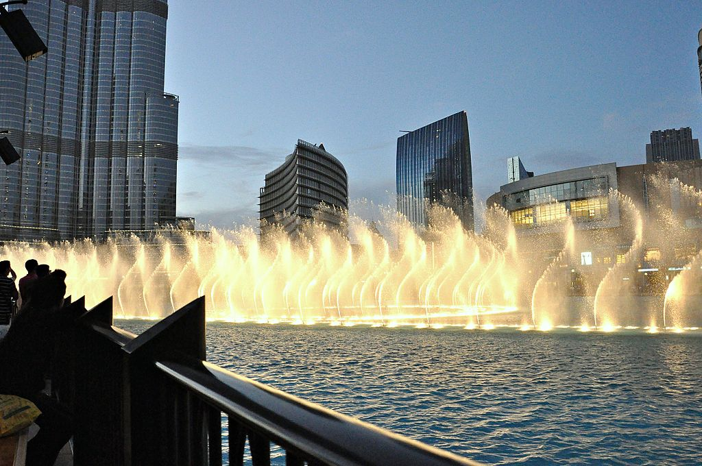
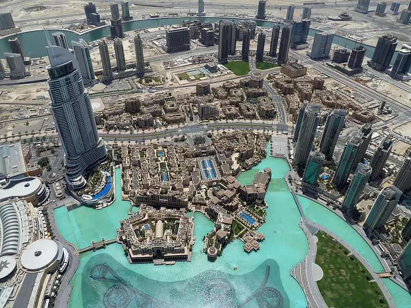
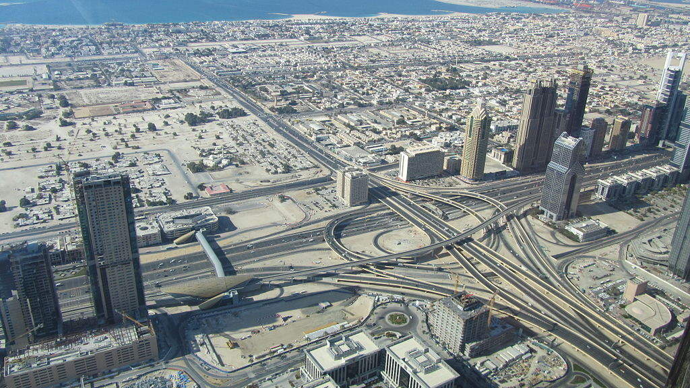

Outside, WET Enterprises designed a fountain system at a cost of Dh 800 million (US$217 million). Illuminated by 6,600 lights and 50 coloured projectors, it is 270 m (900 ft) long and shoots water 150 m (500 ft) into the air, accompanied by a range of classical to contemporary Arabic and other music. It is the world's second largest choreographed fountain. On 26 October 2008, Emaar announced that based on results of a naming contest the fountain would be called the Dubai Fountain
An outdoor observation deck, named At the Top, opened on 5 January 2010 on the 124th floor. At 452 m (1,483 ft), it was the highest outdoor observation deck in the world when it opened. Although it was surpassed in December 2011 by Cloud Top 488 on the Canton Tower, Guangzhou at 488 m (1,601 ft), Burj Khalifa opened the 148th floor SKY level at 555 m (1,821 ft), once again giving it the highest observation deck in the world on 15 October 2014, until the Shanghai Tower opened in June 2016 with an observation deck at a height of 561 metres. The 124th floor observation deck also features the electronic telescope, an augmented reality device developed by Gsmprjct° of Montréal, which allows visitors to view the surrounding landscape in real-time, and to view previously saved images such as those taken at different times of day or under different weather conditions. To reduce the daily rush of sightseers, management allows visitors to purchase tickets in advance for a specific date and time, at a 75% discount on tickets purchased on the spot. Tickets start at 135 AED, or 36.75 USD. On 8 February 2010, the observation deck was closed to the public for two months after power-supply problems caused an elevator to become stuck between floors, trapping a group of tourists for 45 minutes. When the tide is low and visibility is high, people can see the shores of Iran from the top of the skyscraper.
View of The Dubai Fountain from the observation deck View from the observation deckBurj Khalifa is surrounded by an 11 ha (27-acre) park designed by landscape architects SWA Group. Like the tower, the park's design was based on the flower of the Hymenocallis, a desert plant. At the centre of the park is the water room, which is a series of pools and water jet fountains. Benches and signs incorporate images of Burj Khalifa and the Hymenocallis flower. The plants are watered by water collected from the building's cooling system. The system provides 68,000,000 L (15,000,000 imp gal) annually. WET Enterprises, who also developed the Dubai Fountain, developed the park's six water features.